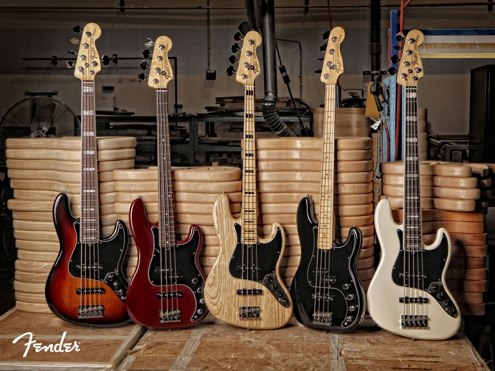
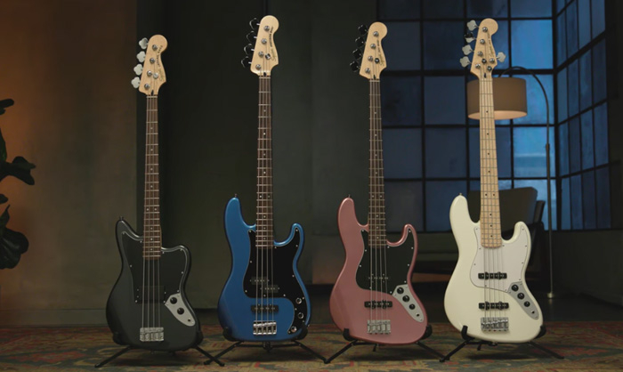

Сайт посвящен бас-гитарам таких именытых производителей как Fender, Fernandes и Charvel.

Fender — американская компания, производящая электрические и акустические гитары, музыкальное оборудование. Занимает одно из лидирующих мест на рынке музыкальных инструментов.
 Fernandes - японская компания, занимающаяся разработкой и производством акустических, электрогитра, бас-гитар, а также гитарного оборудования.
Fernandes - японская компания, занимающаяся разработкой и производством акустических, электрогитра, бас-гитар, а также гитарного оборудования.
Charvel - американская компания, производящая электро- и бас-гитары. Основана в 1974 году.